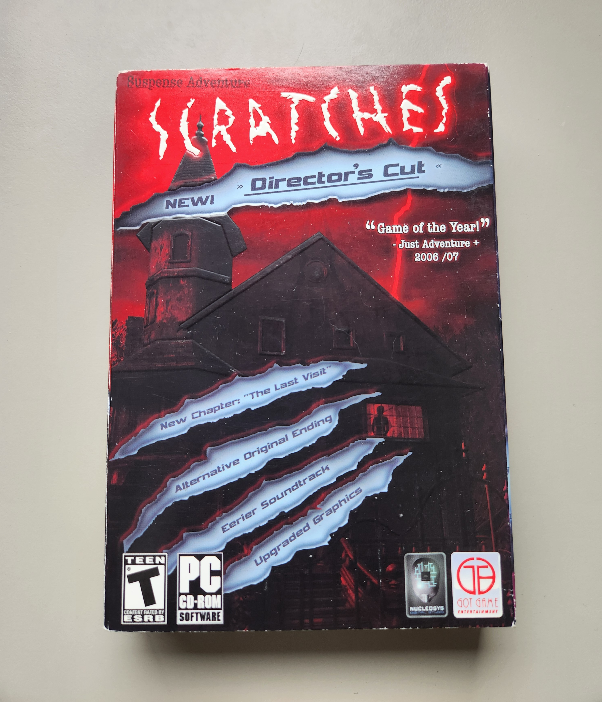
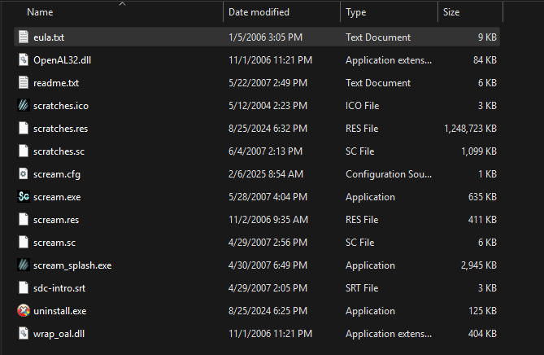
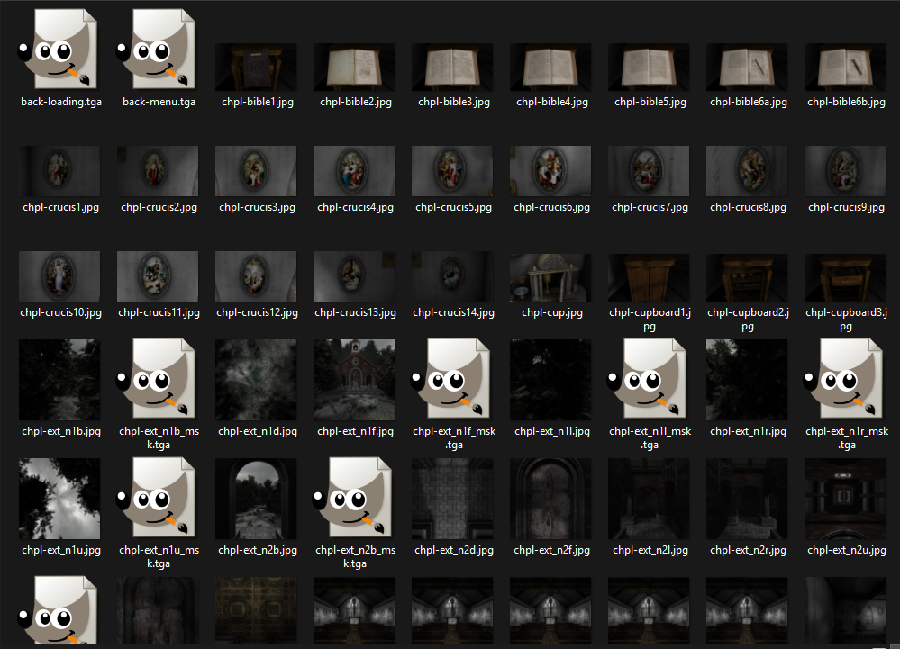
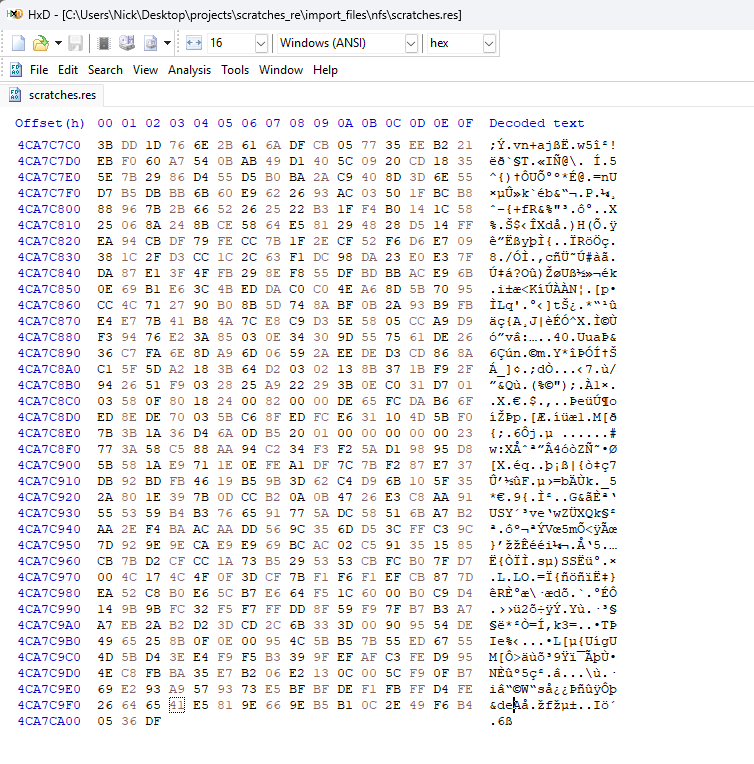

The majority of reverse engineering projects and CTFs that I have worked on have been in Linux environments. I recently replayed Scratches, a point and click horror game for Windows XP from 2006, and noticed on newer versions of Windows the game has problems rendering to widescreen resolutions. Equipped with some prior knowledge of Windows PE files, I decided to try fixing Scratches’ widescreen resolution issues. This part of the writeup will cover the reverse engineering of the proprietary resource file used for the game. The second part will cover the PE file reversing and widescreen resolution fix.
Digital copies of Scratches can be difficult to come by. The developer of the game, Nucleosys, went out of business and the IP was left in limbo. The physical copy I have was purchased by an individual seller online.
If you are interested in obtaining a copy of the game, I would recommend either finding a physical copy online or going to the Senscape Discord server where the lead developer Agustin Cordes does digital Steam key giveaways periodically.
Through the same Discord server, I was able to chat with Agustin about the project and he gave me permission to reverse engineer the game. While this probably isn’t necessary since the goal is to fix a display issue, the eula.txt file packaged with the game explicitly prohibits reverse engineering. Permission at least gives me the reassurance that the feds won’t be busting down my door anytime soon.
These are the files packaged with the game:
The files I looked at the closest were the .res, .cfg, .dll and .exe files. I started by opening the .res files in HxD since I figured they contained the resources.
From the screenshot above, you can see that this appears to be the case due to strings like back-loading.tga and chp1-cupboard1.jpg. The first 20 bytes being “SCream resource file” suggests that this is a proprietary file format used specifically for this game. The SCream engine (Simple CReation Engine for Adventure Makers) was created for this game to help create the “pseudo-3D” effect you see while playing. At a quick glance, both the scratches.res and scream.res files appear to be in the same format. This is the information I gathered from reversing the SCream resource file format:
Header section:
- Length of the header is 0x104
- The first field is the 20 byte “SCream resource file” magic number
- The last field is the number of files (4 bytes)
File metadata section:
- Length of the metadata for each file is 0x5C
- First field: file name
- Penultimate field: offset in .res file (4 bytes)
- Last field: file size (4 bytes)
Main content section:
- The main content of the .res file is where the actual file data is stored for each file listed in the metadata section. The start of the data for each file is denoted by the offset in the metadata section.
With a rough idea of the format of the .res files, I created a script to dump all of the files stored in this format. The script takes a path to a SCream resource file and loops through each data file stored and outputs each file to a directory in its original format. Since the number of files is stored in the header, we can use this to determine how many times to loop. The file offset field in the individual file metadata sections tells us which bytes to grab for each file. After running the script, you will be able to view all of the assets used in the game like images, videos and audio files. In theory, the script should work for any SCream resource file but the two used in this game are the only ones I am aware of. This is a link to the script: https://github.com/nassunt/scratches_re/blob/main/scripts/dump_srf.py

By successfully dumping the data from the SCream resource files by using the script, I confirmed that at least most of my hypotheses regarding the format were correct. To test this further, I manually updated the file offsets in the metadata section so that they pointed at new data I added at the end of the resource file. It was only necessary to change the offsets for the individual resources I wanted to modify. This screenshot shows some of the data I added at the end of the scratches.res file:
After a bit of trial and error with file types and resolutions, I was able to update some .tga files and .ogg files and have them load into the game. You can see in the screenshot below my quick attempt at recreating the Need for Speed Underground menu screen using this method. The sound file for the main menu was also replaced with Get Low by Lil Jon & The East Side Boyz. It is possible to remove the “Scratches Director’s Cut” text, but at this point I was ready to move on to the next stage of the project.

This is the original main menu for reference:

In the second part of this writeup, I will go over my partial 16:9 resolution fix through the use of Frida to hook into OpenGL calls and modify the arguments:
Scratches RE Part 2 - Resolution Fix via OpenGL Frida Hooks